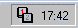
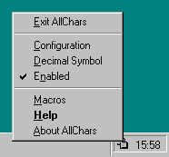
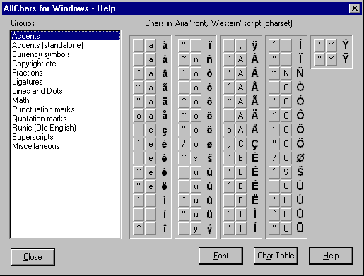
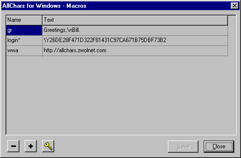
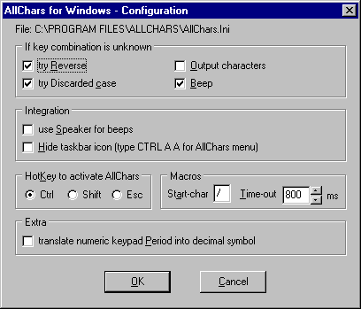

FREEWARE
Copyright © 1994-2000:
Jeroen Laarhoven
Ruurlosebeek 4
8033 DV Zwolle
Netherlands
http://allchars.zwolnet.com
allchars@zwolnet.com
What AllChars can and cannot do
Version One, Two, Three (dot something)
How does AllChars work?
Installing AllChars on your system
Network configuration
, Removing AllChars from your systemAllChars and deadkeys
Macros
Defining macros
, Secret macros, Date macros, Avoiding and solving problemsAllChars in the Taskbar
AllChars popup menu
About AllChars
, Help, Macros, Enable / disable AllChars, Decimal Symbol translation, Configuration, Exit AllChars, Special key combinationsThe writer
Copyright, usage, copying and responsibility
Appendix A - Customizing the translation tables
Upgrading from version 3.0x and 3.5
, Upgrading from version 2.1x, Upgrading from version 2.0x, Upgrading from version 1.2xAppendix B - Technical data
Appendix C - ANSI-table and AllChars key combinations
AllChars for Windows is a utility which adds a missing functionality to Windows: an easy way to make accents like È ‹ Á Ó Ê and special characters like Ä É ≤ â © £ ± fl ∞ Ω ø ª ô Ñ available within every Windows program.
AllChars for Windows is very easy and intuitive to use, and it is possible to make it work the way you do.
AllChars for Windows is FREEWARE.
AllChars for Windows version 3 works with Windows95, Windows98, Windows NT 4.0 and Windows2000. The Euro currency symbol Ä is supported if you have the right Windows fonts (see the readme.txt file for more information).
AllChars for Windows version 2 also offers macros. With this you can make AllChars enter any string of characters in your application by just hitting two or more keys.
And finally, AllChars for Windows makes it possible to change the period in the numeric keyboard to the decimal symbol as defined in the International settings of Windows. In most European countries this is a comma instead of a period.
AllChars for Windows only sends a character value (between 1 and 255) to the application in use. The font and character set (often called ëscriptí) used in the application determine what character is shown.
Older Windows fonts have one (fixed) character set, but the newer Unicode fonts can have many.
E.g. typing Ctrl 1 4 (character 188) gives a º in the Arial font, but a º in the WingDings font. And typing Ctrl ? ? (character 191) gives a ø in the Western character set, but an A in the Greek character set.
The ëChar Tableí option on the AllChars help screen shows the available characters. With the popup menu you can change the font and character set, showing the characters in different fonts and character sets.
In the application being used (e.g. Word) you have to select the font and, optionally, the character set (ëscriptí) in this font. The Windows system itself normally uses the ANSI (Western) character set.
If you use localized Windows and/or application fonts for your language/region, you can configure AllChars with key combinations for the special characters in these localized fonts and/or character sets. Some of these configurations are available on the AllChars website.
But remember: you might need other (localized or Unicode) fonts for these!
So AllChars can not:
See Appendix C for the characters available in the normal ëWesterní (ëLatin 1í, ANSI) character set and Appendix A for customizing AllChars for other key combinations.
AllChars for Windows version 3 is a 32-bit application for Windows 95, 98, NT 4.0 and 2000. Version three now also works (better) with different keyboard layouts and the AltGr key.
Version 3.5 introduces again the temporarily removed macros feature, in a somewhat different and improved way.
AllChars versions 1.xx are 16-bit applications for Windows 3.11 that work fine under Window 95 and Windows 98. AllChars version 2.xx (32-bit) should not be used for Windows 98!
Because AllChars for Windows version 3 uses (a lot) more memory than version 1, I suggest that Windows 95 and Windows 98 users who are short on memory use version 1.
When AllChars for Windows is started, the program ëhooksí itself into the Windows system and watches all keys pressed.
By pressing the Control-key and releasing it again without having pressed another key in the meantime, AllChars is activated. It will now try to translate the next two keys pressed into one special character.
For example:
Ctrl, ', e gives an È
Ctrl, 1, 2 gives a Ω
Ctrl, =, e gives a Ä
Because Control key is normally always used together with another key (pressed at the same time), but AllChars is activated by pressing and then releasing the Control key, you can use AllChars with all Window programs (including system dialogs, etc.) without conflicting with these programs.
Most special characters are built using keys representing 'parts' of this character, like the examples above.
There are also 'double keys' defined for fast usage: f and f gives a É, and L and L gives a £.
Some characters can also be formed by their name: d and g gives a ∞ (degree), c and r gives a © (copyright), m and u gives a µ (mu), etc.
It doesn't matter which of the two keys you type first. And you can use mixed upper- and lower-case. So: c and r , or r and c , or C and r , or R and C , etc., all give ©.
A help screen ñ showing all available and defined key combinations ñ is available by typing Ctrl h h .
In Appendix C you can also find all the available characters with their standard defined key combinations and their ANSI-values.
If you have downloaded allcharsXXsetup.exe, the program installs like most Windows programs.
Otherwise you can install AllChars on your system by copying all AllChars files to a directory (any) on your harddisk. To activate AllChars, just start (run) it.
If you want to have AllChars start every time you start Windows, add the program to the Windows ëStartupí group.
AllChars does not need to be in your Windows directory. AllChars also makes no changes to your system files or registration database.
AllChars need writing rights for its configuration file; default allchars.ini in the AllChars directory.
For network configurations this file can be placed in another directory, so the AllChars program can be shared, while individuals have there own (local) configuration file.
For this start AllChars with the commandline option ë-cí followed by the full filepath and name of the configuration file. Both should be separated by a space. E.g.:
allchars.exe -c m:\configurations\allchars.ini
allchars.exe -C "c:\Program Files\AllChars\allchars.ini"
One can check which configuration file is used in the AllChars Configuration screen.
If you installed AllChars with Windows setup (using SetupAllChars3xx.exe) you can uninstall AllChars like most Windows programs. Use the ëAdd/Remove Programsí option of the ëControl Panelí.
If you installed AllChars by hand (copying the files), you can remove AllChars from your system by deleting all files in the AllChars directory. And if you added AllChars to your ëStartupí group, you also have to remove it from there.
Windows has so-called deadkeys for international users (like us in Europe). Accent keys are not shown after typing them. Windows waits for you to type the next key and then tries to see if the combination of these two makes sense. If so the accent is typed. This way we Europeans and others got our needed accents.
For example, if you type ' you see nothing. If the next key is an e , then you see an È ; if the next key is a t then you see 't .
This looks like the functionality of AllChars for Windows. So why use AllChars ?
You can use AllChars together with deadkeys. You can either use the deadkeys without AllChars (not typing Ctrl before the combination); or you may use AllChars, but then the deadkey must be typed first!
If you wish to turn off the deadkeys, the only way I know to do this is by changing the settings of the keyboard to the standard US layout.
Open the Control Panel again, choose Keyboard and change (or add if needed) the keyboard layout English (United States).
AllChars for Windows can, besides translating key combinations into special characters, also expand abbreviations into longer text strings. We call these ëmacrosí. For example:
/wwa giveshttp://allchars.zwolnet.com
You can define these macros yourself and they can be used for:
A macro text can hold any printable character including special characters made with AllChars, but no ëdeadkeyí characters like: ` ¥ ® à ò ∏ ~ , ^ ' ", (ansi 096, 180, 168, 136, 152, 184, 126, 044, 094, 039 and 034). So, no commas, no single quotes and no double quotes!
In a macro name you should only use characters you can type. Macro names are case sensitive.
You run a macro by typing the macro start-character followed by the name of the macro. By default a slash ë/í character. On the configuration screen you can change this character to something else, e.g. a dot, ë<í, ë~í, etc.
Besides characters, a macro text can also hold special codes. These start with a backslash ë\í character, followed by a letter (and numbers).
These special codes are:
You can edit, add and delete macros using the Macros screen. See the chapter ëAllChars Popup menu - Macrosí below.
You can make so-called ësecretí macros in AllChars, usable for passwords, logins etc.
The string you have to type and the string AllChars sends instead are both encrypted in the macro list and ALLCHARS.INI file. So this way secret macros are reasonably safe to use. But like always there is a risk when ëwriting downí password information!
Making secret macros is done in three steps:
Examples:
|
Name |
secret macro definition (Text) |
encrypted macro text (Text) |
|
PwBank |
slik=u5assq53na |
\YAC61A16791A67DC05185946ADC78879A |
|
Login |
slak=john\tfirework |
\Y88BA4BC06FC44ECF4BF839C16BBC4EC14AF8071E |
The first example is the password for the bank. You have to type ëslikí for the ëu5assq53na' password.
The second example is for login on a system as ëjohní followed by a tab and the password ëfireworkí.
You can recognize a secret macro by a ë*í character behind the macro name.
AllChars can replace a macro name with a date and/or time. This way you can make macros like:
|
Name |
Text |
Output Example |
|
today |
\w(dddddd) |
Saturday 11 March 2000 |
|
tomorrow |
\w(d-mm-yy|1) |
12-03-00 |
|
yesterday |
\w(d/mmm/yyyy|-1) |
10/Mar/2000 |
|
lh |
Zwolle, \w |
Zwolle, 11-March-2000 |
|
date |
\w(yyyymmdd) |
20000311 |
|
dati |
\w(yyyy-mm-dd hh:nn:ss) |
2000-03-11 16:05:00 |
A date macro (part) starts with ë\wí, optionally followed by a format description and day specification inside brackets.
The day specification indicates the number of days from today: 1 = tomorrow; -1 = yesterday; and so on.
In the format description you specify how to format the date and/or time using specifiers and other characters. The format is very flexible*. The most important specifiers are:
|
Specifier |
Example |
Description |
|
c |
Saturday 11 March 2000 5:00:30 PM |
Displays the date using Windows short date format followed by the time using Windows long time format. |
|
ddddd |
3/11/00 |
Displays the date using Windows short date format |
|
dddddd |
Saturday 11 March 2000 |
Displays the date using Windows long date format. |
|
t |
5:00:30 PM |
Displays the time using Windows time format |
|
d |
7 |
Displays the day as a number without a leading zero (1-31). |
|
dd |
07 |
Displays the day as a number with a leading zero (01-31). |
|
ddd |
Sat |
Displays the day as an abbreviation (Sun-Sat) using Windows short day names. |
|
dddd |
Saturday |
Displays the day as a full name (Sunday-Saturday) using Windows long day names. |
|
m |
3 |
Displays the month as a number without a leading zero (1-12). If the m specifier immediately follows an h or hh specifier, the minute rather than the month is displayed. |
|
mm |
03 |
Displays the month as a number with a leading zero (01-12). If the mm specifier immediately follows an h or hh specifier, the minute rather than the month is displayed. |
|
mmm |
Mar |
Displays the month as an abbreviation (Jan-Dec) using Windows short month names. |
|
mmmm |
March |
Displays the month as an abbreviation (January-December)using Windows long month names. |
|
yy |
00 |
Displays the year as a two-digit number (00-99). |
|
yyyy |
2000 |
Displays the year as a four-digit number (0000-9999). |
|
h |
5 |
Displays the hour without a leading zero (0-23). |
|
hh |
05 |
Displays the hour with a leading zero (00-23). |
|
nn |
45 |
Displays the minute with a leading zero (00-59). |
|
ss |
30 |
Displays the second with a leading zero (00-59). |
|
am/pm |
am AM |
Uses the 12-hour clock for the preceding h or hh specifier, and displays 'am' for any hour before noon, and 'pm' for any hour after noon. |
|
a/p A/P |
p P |
Uses the 12-hour clock for the preceding h or hh specifier, and displays 'a' for any hour before noon, and 'p' for any hour after noon. |
|
/ |
/ |
Displays windows date separator character. |
|
: |
: |
Displays Windows time separator character. |
|
ampm |
AM |
Uses the 12-hour clock for the preceding h or hh specifier, displaying Windows AM/PM symbols. |
* As Delphi programmers may guess, all options of the FormatDateTime function can be used.
The macros have two configuration parameters: the start-character and the time-out time. Both can be set in the configuration screen.
To avoid problems with macros:
If you use a program in which the macro name is not removed and the end of the macro text is removed instead, try activating the delay option: add in allchars.ini the line ëMacroDelay=200í in the ë[Configuration]í section. You can experiment with the delay time (200 ms in the example).

Normally AllChars works in the background, without your having to pay any attention to it. After starting AllChars it will display an icon in the right part of the Windows taskbar near the time. This icon shows you the state of the program, and from there you can access the program.
The AllChars icon holds two keys numbered one and two. Normally they both are grey. But, if you activated AllChars by hitting and releasing the Ctrl key, key number one will turn red, telling you that AllChars is waiting for the first key of the key combination.
After pressing the first key key number two in the icon will turn red, informing you that AllChars is waiting for the second key. After pressing this second key the keys in the icon will turn grey again.
In this icon you can also see if the translation of the numeric keypad period key into the decimal symbol is switched on or off. If switched on you see a small period in the lower left corner of the icon.
You can access the AllChars program by this icon:
If you have too many icons in your taskbar, you can hide the AllChars icon. See the configuration chapter below. You now have to type Ctrl a a to pop up the AllChars menu.
Right click on the icon in the taskbar (or type Ctrl a m) and you will see the AllChars popup menu.

From there you can:
The about box gives you information about the AllChars version and the copyright.
Here you can also find AllCharsí home on the Internet: http://allchars.zwolnet.com.
The help screen shows all defined special characters and the key combinations to make these characters with AllChars. Select a character group in the ëGroupsí list and all definitions in this group are shown.

With the right mouse button you can popup a menu with four options:

The ëChars Tableí button shows all extended characters (values 128 - 255). The characters are shown in black or red. If a character is black it shows the key combination(s) defined for this character. If it is red, the character has no key combinations defined.
If you click on a character in the table, it shows the key combinations defined for this character.
When showing the character table, you can use the same button, now labeled ëChars Lowí or ëChars Hií, to show the lower or higher half of the character table.
The characters in the lower half are mostly found on your (US) keyboard. These are shown in dark blue.
Showing the lower half can be useful for symbol fonts like Wingdings. By clicking on the wanted symbol you know what key is needed for it. E.g. typing J gives a J in the Wingdings font.
The macro screen shows the available macros and allows you to modify them.

By clicking on the macro text or name you can edit this text or name.
Use the ë+í key to add a macro and the ëñí key to delete the selected macro.
Use the Encrypt key (shown as a yellow key) to encrypt
the selected macro. This way you can make secret macros for passwords, logins,
etc. See the paragraph ëSecret macrosí.
First type the
text for the macro in the text field, then hit the Encrypt key. In the figure
the ëloginí macro is a secred macro for login on e.g. a website. Typing ëyepí
will output the login name ëJohní followed by a tab and the password
ëFireworkí.
See the chapter about Macros for more information about macros.
With this function you can (temporarily) disable or enable AllChars. The AllChars icon in the Windows taskbar will be crossed out, showing AllChars is disabled.
For programmers: If AllChars is disabled, the keyboard hook is "unhooked", so AllChars should not interfere with any other program.
With the ëDecimal Symbolí function you can switch on or off the translation of the period key in the numeric keypad. If switched on, AllChars will translate this period key into the decimal symbol.
The AllChars icon in the Windows taskbar will then show a period in the lower left corner. If you donít see it, it is switched off, or ... you might need glasses.
With the Configuration screen you can change the AllChars settings.

You can change the following AllChars settings:
If a key combination is unknown:
Integration:
Hotkey to activate AllChars:
Macros:
Extra:
Choose ëExití if you want to close AllChars. The program 'unhooks' itself from the system and removes itself from memory.
AllChars knows key combinations that do not result in a special character or macro, but are used to perform an action. These key combinations are:
The first version of AllChars for Windows was written in 1994 and was first distributed in the Netherlands as shareware. Two years later the English version was released on the net ñ being freeware.
The 32-bit version 2 was written in the winter of 1997 using Borland Delphi. Version 3 solved the Windows 98 problems, offered support for different keyboard layouts, and was released in 1999.
Version 3.5 was released in the new millenium, bringing back the ñ often asked for ñ macros feature.
The writer Jeroen Laarhoven is reachable by email at:
∑
jeroen@zwolnet.com or allchars@zwolnet.comThe latest version(s) of AllChars will be available at:
∑
http://allchars.zwolnet.com
AllChars for Windows is copyrighted by its writer Jeroen Laarhoven.
AllChars for Windows is freeware. You are free to use the program for personal use and professionally without having to pay a single penny, cent or whatever. You may copy the program and its documentation freely.
Distributing the program and its documentation by electronic networks, diskette, CD-ROM etc. is allowed as long as you are not selling it and the program and documentation is distributed unchanged and complete (see Appendix B). Please refer to http://allchars.zwolnet.com for updates.
And ... the developer of AllChars for Windows makes no representations about the suitability of this software or about any content or information made accessible by the software, for any purpose. The software is provided 'as is' without express or implied warranties, including warranties of merchantability and fitness for a particular purpose or non-infringement. This software is provided free of charge and, accordingly, the developer of AllChars for Windows will not be liable on any grounds for any damages suffered by you or by any user of the software.
The developer of AllChars for Windows will offer limited support for this software and is under no obligation to issue updates to this software.
The file allchars.ini in the AllChars directory contains the tables used by AllChars for translating the key combinations into special characters.
The file can be changed with any text editor, e.g. Notepad.
The tables are built as long strings of characters built up out of definitions of three characters separated by a space character.
You can change or add to these tables, but do not change the format.
All definitions in the ë[Tables]í section are loaded. You can organize the definitions by grouping them and giving a group a name like ëAccentsí, ëCurrency symbolsí, etc. You will then find these groups in the help
screen.
The groups are shown in the order you define them and are interpreted first to last, left to right.
If a group name starts with a period (like ë.Deadkeysí), it will be hidden in the help screen.
After changing the tables you always have to close AllChars and open it again to activate the changes.
You can reuse the old allchars.ini file.
You can reuse the old allchars.ini file, although the new INI file is improved.
And you might want to rename the macros.
You can reuse the old allchars.ini file, but the grouping of the definitions in the new one might make more sense. And you might want to rename the macros.
The format of allchars.ini is changed in version 2. Do not overwrite the new allchars.ini with allchars.ini from version 1.2x! AllChars will not work with the old allchars.ini.
There are now more sections in allchars.ini.
The ë[Tables]í section contains the translation tables. If you want to update and reuse your UserTable, copy your ëUserTable=...í line from the old file in the ë[Tables]í section of the new file and change it to something like ëMy Codes=...í.
The configuration settings are now in the section ë[Configuration]í.
Operatingsystem - Windows 95, Windows 98, Windows NT 4.0 orWindows 2000.
Harddisk usage - ca. 800 KB (600 KB without Manual), but who cares nowadays.
Principle of operation - AllChars uses the Windows keyboard-hook and always
calls other keyboard-hooks (if any) before doing its job. Characters are sent to
the target window using WM_CHAR,
WM_KEYDOWN and WM_KEYUP Windows
messages.
Macros are sent using the WH_JOURNALPLAYBACK hook.
Configuration - In ALLCHARS.INI (good old Windows profile format).
Minimal configuration - AllChars needs the following files to function:
ALLCHARS.EXEComplete file list - AllChars v3.6 should be distributed with each of these files:
ALLCHARS.EXE - the program itself
|
ANSI |
|
chars |
ANSI |
|
chars |
ANSI |
|
chars |
ANSI |
|
chars |
|
0128 |
Ä |
= e |
0160 |
s p |
0192 |
¿ |
` A |
0224 |
‡ |
` a | |
|
0129 |
Å |
|
0161 |
° |
^ ! |
0193 |
¡ |
' A |
0225 |
· |
' a |
|
0130 |
Ç |
. , |
0162 |
¢ |
/ c |
0194 |
¬ |
^ A |
0226 |
‚ |
^ a |
|
0131 |
É |
- f |
0163 |
£ |
- L |
0195 |
√ |
~ A |
0227 |
„ |
~ a |
|
0132 |
Ñ |
, , |
0164 |
§ |
x o |
0196 |
ƒ |
" A |
0228 |
‰ |
" a |
|
0133 |
Ö |
3 . |
0165 |
• |
= Y |
0197 |
≈ |
o A |
0229 |
 |
o a |
|
0134 |
Ü |
| + |
0166 |
¶ |
| | |
0198 |
∆ |
A E |
0230 |
Ê |
a e |
|
0135 |
á |
+ + |
0167 |
ß |
o s |
0199 |
« |
, C |
0231 |
Á |
, c |
|
0136 |
à |
\ ^ |
0168 |
® |
\ " |
0200 |
» |
` E |
0232 |
Ë |
` e |
|
0137 |
â |
% % |
0169 |
© |
O C |
0201 |
… |
' E |
0233 |
È |
' e |
|
0138 |
ä |
^ S |
0170 |
™ |
. a |
0202 |
|
^ E |
0234 |
Í |
^ e |
|
0139 |
ã |
. < |
0171 |
´ |
< < |
0203 |
À |
" E |
0235 |
Î |
" e |
|
0140 |
å |
O E |
0172 |
¨ |
- , |
0204 |
à |
` I |
0236 |
Ï |
` i |
|
0141 |
ç |
|
0173 |
|
s - |
0205 |
Õ |
' I |
0237 |
Ì |
' i |
|
0142 |
é |
^ Z |
0174 |
Æ |
O R |
0206 |
Π|
^ I |
0238 |
Ó |
^ i |
|
0143 |
è |
|
0175 |
Ø |
^ _ |
0207 |
œ |
" I |
0239 |
Ô |
" i |
|
0144 |
ê |
|
0176 |
∞ |
. 0 |
0208 |
– |
- D |
0240 |
|
- d |
|
0145 |
' |
. ` |
0177 |
± |
+ - |
0209 |
— |
~ N |
0241 |
Ò |
~ n |
|
0146 |
' |
. ' |
0178 |
≤ |
. 2 |
0210 |
“ |
` O |
0242 |
Ú |
` o |
|
0147 |
" |
` ` |
0179 |
≥ |
. 3 |
0211 |
” |
' O |
0243 |
Û |
' o |
|
0148 |
" |
' ' |
0180 |
¥ |
\ ' |
0212 |
‘ |
^ O |
0244 |
Ù |
^ o |
|
0149 |
ï |
* . |
0181 |
µ |
, u |
0213 |
’ |
~ O |
0245 |
ı |
~ o |
|
0150 |
ñ |
n - |
0182 |
∂ |
q | |
0214 |
÷ |
" O |
0246 |
ˆ |
" o |
|
0151 |
ó |
m - |
0183 |
∑ |
. . |
0215 |
◊ |
x x |
0247 |
˜ |
: - |
|
0152 |
ò |
\ ~ |
0184 |
∏ |
\ , |
0216 |
ÿ |
/ O |
0248 |
¯ |
/ o |
|
0153 |
ô |
T M |
0185 |
π |
. 1 |
0217 |
Ÿ |
` U |
0249 |
˘ |
` u |
|
0154 |
ö |
^ s |
0186 |
∫ |
. o |
0218 |
⁄ |
' U |
0250 |
˙ |
' u |
|
0155 |
õ |
. > |
0187 |
ª |
> > |
0219 |
€ |
^ U |
0251 |
˚ |
^ u |
|
0156 |
ú |
o e |
0188 |
º |
1 4 |
0220 |
‹ |
" U |
0252 |
¸ |
" u |
|
0157 |
ù |
|
0189 |
Ω |
1 2 |
0221 |
› |
' Y |
0253 |
˝ |
' y |
|
0158 |
û |
^ z |
0190 |
æ |
3 4 |
0222 |
fi |
b p |
0254 |
˛ |
| o |
|
0159 |
ü |
" Y |
0191 |
ø |
^ ? |
0223 |
fl |
s s |
0255 |
ˇ |
" y |
|
|
|
|
|
|
|
|
|
|
|
|
|
Alternative combinations:
|
ANSI |
|
chars |
ANSI |
|
chars |
ANSI |
|
chars |
ANSI |
|
chars |
|
0128 |
Ä |
e e |
0162 |
¢ |
c c |
0169 |
© |
c r |
0189 |
Ω |
/ 2 |
|
0131 |
É |
f f |
0162 |
¢ |
| c |
0174 |
Æ |
r m |
0190 |
æ |
/ 3 |
|
0150 |
ñ |
2 - |
0163 |
£ |
L L |
0176 |
∞ |
d g |
0191 |
ø |
? ? |
|
0151 |
ó |
3 - |
0165 |
• |
Y Y |
0182 |
µ |
m u |
|
|
|
|
0161 |
° |
! ! |
0167 |
ß |
p p |
0188 |
º |
/ 4 |
|
|
|
The characters displayed are part of the Western character set (script).